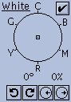
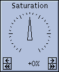
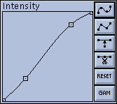
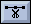

|
There are four separate controls in the HSV
Modification tool. At the top of the window are a pair of circular controls that handle hue remapping. Lower down is a circular control that maps 'white' (and greys) to a specified color. There is also dial control that lets you saturate/desaturate the colors of the image. Finally, at the bottom there is a graph window that lets you modify intensity values via an arbitrary remapping function. |
 |
These two dials are used to define a
source and a destination range of hue values. Every hue
in the source range (defined in the From dial)
gets mapped to the value of the corresponding point in
the destination range (defined in the To dial). Each dial has a pair of radial lines with handles at their ends. Between the two lines an arc is drawn with an arrow at one end. The wedge drawn by these lines and the arc defines a range of values (in degrees). The direction of the arc (clockwise, or counter-clockwise) determines the direction of this range of values (increasing or decreasing). |
Distributed around the dial are tick marks and the letters 'R', 'Y', 'G', 'C', 'B', and 'M'. These letters stand for the colors Red, Yellow, Green, Cyan, Blue, and Magenta, and they show where these colors appear on the circle.
The range is shown numerically below the control. By default the range is '330 , 30 CW'. This means that a range of values [330 , 331 , 332 , ... 359 , 0 , 1 , ... 28 , 29 , 30] has been defined. Note that (being a circle and all) it wraps back to 0 after 359 .
The range can be changed in many different ways. You can click on the 'handles' at the end of the radial lines and move them around. If you click inside the dial, but not on one of the handles, you'll be able to drag the range around as a single object. There are also 5 buttons below the dial that let you rotate the range, flip the direction of the range, and increase/decrease the size of the range while keeping it centered around the same value.
In its default state, the To dial is set to the same range as the From dial. When the two dials are set to the same range, they are effectively 'turned off', and ignored.
An example of hue remapping:
Note that the values printed when you are tracking pixel values in the image are the values before the HSV Modification tool is applied. For example, the background of the default image will still claim to be blue, regardless of what color you may have changed it to. This is so that you know what Hue value you will need to remap if you want to change its color again.
If you press the Reset button that is located near the hue remapping controls, it will effectively disable the hue remapping by setting the To range equal to the From range.
Below the hue remapping controls are a group of 'radio buttons'. You can have up to six different hue remappings happening simultaneously. Higher numbered mappings take precedence over lower numbered mappings.
An example of multiple hue remappings:
Note that the six hue remappings are not 'cascaded'. The output of one remapping is not fed as input into any of the other hue remappings. The hue remappings always operate on the hue values in the original image. In this example, if remapping #1 adds 32 to all hue values, thereby mapping the blue background (value 240) into a purple-blue (value 272), remapping #2 still sees the background at 240, and can remap it to anything it likes. Similarly, in the same example, if remapping #1 has mapped a green-blue color (value 208) into blue (value 240), remapping #2 will not map this into another color. As far as remapping #2 is concerned, that green-blue is still green-blue.
If it seems complicated, I'm sorry. It is.
|  | In the HSV colorspace, 'white' (including black, and all the greys in between) has no Hue or Saturation components. As such, it is not possible to use the hue remapping controls to change the color of white pixels in the image, since they have no 'color' to change. |
The white remapping control gives you a way to add Hue and Saturation components to all the whites in the image. It consists of a movable point in a color dial. The angle of the dot from the center of the dial determines the Hue component. The distance of the dot from the center of the dial determines the Saturation component. The further the dot is from the center of the dial, the more saturated the color will be.
You can control the white remapping control in several ways. You can click on the handle and drag it around with the mouse. There are also four buttons provided under the dial. One pair allows you to rotate the handle clockwise and counter-clockwise without changing its distance from the center. The other pair of buttons lets you change the distance between the handle and the center without changing the angle.
The current Hue and Saturation values provided by the control are displayed below the dial. The first number is the Hue component, in degrees, and the second is the Saturation component, as a percentage.
There is also a checkbox that will let you turn off the white remapping control. This lets you quickly compare your modified 'white' with the original white. You can also effectively disable the white remapping control by putting the handle back in the center of the control. The easiest way to do this is to click and hold the 'move towards center' button until the saturation value gets down to 0%.
Example:
|  | The saturation control lets you globally
increase or decrease the color saturation of the image.
In effect, it is much like the 'color' control on most
color televisions. The saturation control is a dial that operates exactly like the dials described in "Using the Dial Controls". In short, you can click and hold down any of the four buttons in the bottom of the control to increase or decrease the control's value. You can also click on the dial itself and move the pointer around directly. |
The saturation control has values that range from '-100%' to '+100%'. At its default setting of '0%', the saturation control has no effect on the image. As the values increase, the colors become more saturated, up to '+100%', at which point every color is fully saturated. Likewise, as values decrease, the colors become desaturated. At '-100%', every color will be completely desaturated (i.e., a shade of grey). Note that this control is applied after the White Remapping control, so if you 'greyify' the image by completely desaturating it, you will not be able to color it using the White Remapping control. You could get around this problem by saving the (now grey) image, and reloading, or you could simply use the Grey button in the Colormap Editor instead.
Unless you're trying for some special effects, the useful range of this control is probably 20%. Also note that the control will have no effect on shades of grey, as they have no color to saturate.
|  | The Intensity graph allows you to
change the brightness of the image, change the contrast
of the image, and get some unique effects. The Intensity graph is a function that lets you remap intensity values (the Value component in the HSV Colorspace) into other intensity values. The input and output values of this function both range from 0 to 255. The input values range along the x axis of this graph (the horizontal). For every input value (point along the x axis) there is a unique output value determined by the height of the graph at that point. In the graph's default state, the function is a straight line from bottom-left to top-right. In this case, each input value produces an equivalent output value, and the graph has no effect. |
There are a number of 'handles' along the graph. These provide your major means of interacting with the graph. You can move them around arbitrarily, subject to these two constraints: the handles at the far left and far right of the graph can only be moved vertically, and handles must remain between their neighboring handles for the graph to remain a proper function.
The handles are normally connected by a spline curve. To see this, move one of the handles by clicking and dragging it. (Note that the x,y position of the current handle is displayed while the mouse button is held down.) The function will remain a smoothly curved line that passes through all the handles. You can change this behavior by putting the function into 'lines' mode. Press the button. The function will change to a series of line segments that connect the handles. Press the button to go back to 'spline' mode.
The next two buttons let you add or delete handles. The button will insert a handle into the largest 'gap' in the function. The  button will remove a handle from the smallest 'gap' in the function. You can have as few as 2 handles, or as many as 16. Note that as the number of handles gets large, the spline will start getting out of control. You may wish to switch to 'lines' mode in this case.
The button puts everything back on a straight line connecting bottom-left to top-right (a 1:1 function). It does not change the number of handles, nor does it change the x -positions of the handles.
The  button lets you
set the function curve by entering a single number. The function
is set equal to the gamma function:
button lets you
set the function curve by entering a single number. The function
is set equal to the gamma function:
y = 255 * ((i/255) ^ (1/g))
where i is the input value (0-255), g is the gamma value, and y is the computed result (0-255).
There is a shortcut for the  button. Type g while the mouse is
inside the graph window.
button. Type g while the mouse is
inside the graph window.
Also, touching any of the handles after a command will put the graph back into its 'normal' mode. (Either 'spline' or 'lines' depending on which of the top two buttons is turned on.)
Generally, whenever you move a graph handle and let go of it, the image will be redrawn to show you the effects of what you've done. This can be time-consuming if you intend to move many points around. You can temporarily prevent the redisplay of the image by holding down a <Shift> key. Continue to hold the <shift> key down while you move the handles to the new position. Release the <Shift> key when you're done, and the image will be redisplayed.